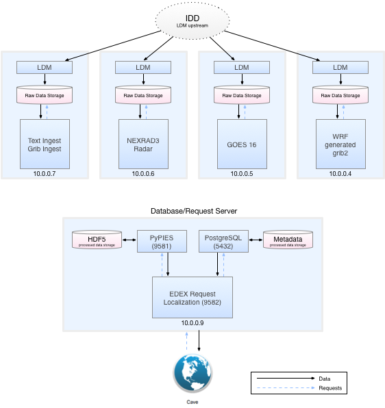

Distributed EDEX
AWIPS makes use of service-oriented architecture to request, process, and serve real-time meteorological data. While originally developed for use on internal NWS forecast office networks, where operational installations of AWIPS can consist of a dozen servers or more, because the AWIPS source code was hard-coded with the NWS network configuration, the early Unidata releases were stripped of operation-specific configurations and plugins, and released specifically for standalone installation. This made sense given that a single EDEX instance with a Solid State Drive could handle most of the entire NOAAport data volume. However, with GOES-R(16) coming online, and more gridded forecast models being created at finer temporal and spatial resolutions, there was now a need to distribute EDEX data decoding in order to handle this firehose of data.
This walkthrough will install different EDEX components on two ma`chines in the XSEDE Jetstream Cloud, the first is used to ingest and decode while the second is used to store and serve data.
Database/Request Server
Specs
- IP address 10.0.0.9
- CentOS 6.9
- m1.medium (CPU: 6, Mem: 16 GB)
- 1000GB attached storage for
/awips2/edex/data/hdf5
1. Install
groupadd fxalpha && useradd -G fxalpha awips
mkdir /awips2
wget -O /etc/yum.repos.d/awips2.repo http://www.unidata.ucar.edu/software/awips2/doc/awips2.repo
yum clean all
yum groupinstall awips2-database
2. IPtables Config
It is required that ports 5432 and 5672 be open for the specific IP addresses of outside EDEX ingest servers. It is not recommended that you leave port 5432 open to all connections (since the default awips database password is known, and is not meant as a security measure). Further, it is recommended that you change the default postgres awips user password (which then requires a reconfiguration of every remote EDEX ingest server in order to connect to this database/request server).
vi /etc/sysconfig/iptables
*filter
:INPUT DROP [0:0]
:FORWARD DROP [0:0]
:OUTPUT ACCEPT [0:0]
:EXTERNAL - [0:0]
:EDEX - [0:0]
-A INPUT -i lo -j ACCEPT
-A INPUT -p icmp --icmp-type any -j ACCEPT
-A INPUT -m state --state ESTABLISHED,RELATED -j ACCEPT
-A INPUT -m state --state NEW -m tcp -p tcp --dport 22 -j ACCEPT
-A INPUT -m state --state NEW -m tcp -p tcp --dport 5672 -j ACCEPT
-A INPUT -m state --state NEW -m tcp -p tcp --dport 9581 -j ACCEPT
-A INPUT -m state --state NEW -m tcp -p tcp --dport 9582 -j ACCEPT
-A INPUT -s 10.0.0.7 -j EDEX
-A INPUT -j EXTERNAL
-A EXTERNAL -j REJECT
-A EDEX -m state --state NEW -p tcp --dport 5432 -j ACCEPT
-A EDEX -m state --state NEW -p tcp --dport 5672 -j ACCEPT
-A EDEX -j REJECT
COMMIT
Note the line -A INPUT -s 10.0.0.7 -j EDEX as well as the following -A EDEX ... rules for ports 5432 (PostgreSQL) and 5672 (PyPIES/HDF5).
The three ports left open to all connections (5672,9581,9582) in addition to default port 22 are for outside CAVE client connections
3. Database Config
In the file /awips2/data/pg_hba.conf you define remote connections for all postgres tables with as <IP address>/32, after the block of IPv4 local connections:
vi /awips2/data/pg_hba.conf
# IPv4 local connections:
host fxatext all 127.0.0.1/32 trust
host hd_ob92oax all 127.0.0.1/32 trust
host dc_ob7oax all 127.0.0.1/32 trust
host hmdb all 127.0.0.1/32 trust
host metadata all 127.0.0.1/32 md5
host maps all 127.0.0.1/32 md5
host postgres all 127.0.0.1/32 md5
host ncep all 127.0.0.1/32 md5
host ebxml all 127.0.0.1/32 trust
host replication replication 127.0.0.1/32 md5
# Remote connections
host fxatext all 10.0.0.7/32 md5
host hd_ob92oax all 10.0.0.7/32 md5
host dc_ob7oax all 10.0.0.7/32 md5
host hmdb all 10.0.0.7/32 md5
host metadata all 10.0.0.7/32 md5
host maps all 10.0.0.7/32 md5
host postgres all 10.0.0.7/32 md5
host ncep all 10.0.0.7/32 md5
host ebxml all 10.0.0.7/32 md5
host replication replication 10.0.0.7/32 md5
# IPv6 local connections:
host all all ::1/128 md5
host replication replication ::1/128 md5
4. Start EDEX
edex start database
This will start PostgreSQL, httpd-pypies, Qpid, and the EDEX Request JVM (and will not start the LDM or the EDEX Ingest and IngestGrib JVMs)
Ingest/Decode Server
Specs
- IP address 10.0.0.9
- CentOS 6.9
- m1.xxlarge (CPU: 44, Mem: 120 GB)
1. Install
groupadd fxalpha && useradd -G fxalpha awips
wget -O /etc/yum.repos.d/awips2.repo http://www.unidata.ucar.edu/software/awips2/doc/awips2.repo
yum clean all
yum groupinstall awips2-ingest
2. EDEX Config
vi /awips2/edex/bin/setup.env
Here you should redefine DB_ADDR and PYPIES_SERVER to point to the Database/Request server (10.0.0.9)
export EDEX_SERVER=10.0.0.7
# postgres connection
export DB_ADDR=10.0.0.9
export DB_PORT=5432
# pypies hdf5 connection
export PYPIES_SERVER=http://10.0.0.9:9582
# qpid connection
export BROKER_ADDR=${EDEX_SERVER}
Notice that EDEX_SERVER and BROKER_ADDR (qpid) should remain defined as the localhost IP address (10.0.0.7)
3. Start EDEX
edex start ingest
This will start Qpid and the EDEX Ingest and IngestGrib JVMs (and not start PostgreSQL, httpd-pypies, or the EDEX Request JVM)
Additional Notes
- Install more than one
awips2-ingestservers, with all pointing to the sameDB_ADDRandPYPIES_SERVERDatabase/Request Server (10.0.0.9 below) and each decoding a different data set:

- Every EDEX Ingest IP address must be allowed in both iptables and pg_hba.conf as shown above.